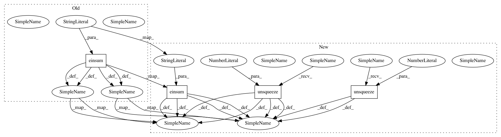

402dc6f3e837a6bd84a081a6f1533b19341dd453,se3cnn/point/operations.py,PairConvolution,forward,#PairConvolution#,28
Before Change
k1, k2, k3, k4, k5, k6 = k.split(k.size(3) // 6, 3)
out = torch.einsum("zabij,zcdj->zabi", (k1, features)) // [batch, a, b, channel]
out += torch.einsum("zacij,zcdj->zabi", (k2, features)) // [batch, a, b, channel]
out += torch.einsum("zadij,zcdj->zabi", (k3, features)) // [batch, a, b, channel]
out += torch.einsum("zbcij,zcdj->zabi", (k4, features)) // [batch, a, b, channel]
out += torch.einsum("zbdij,zcdj->zabi", (k5, features)) // [batch, a, b, channel]
out += torch.einsum("zcdij,zcdj->zabi", (k6, features)) // [batch, a, b, channel]
return out
After Change
k = self.kernel(rb - ra) // [batch, a, b, 6 * i, j]
k1, k2, k3, k4, k5, k6 = k.split(k.size(3) // 6, 3)
out = torch.einsum("zabij,zcdj->zabi", (k1, features)) // [batch, a, b, channel]
out += torch.einsum("zacij,zcdj->zai", (k2, features)).unsqueeze(2) // [batch, a, b, channel]
out += torch.einsum("zadij,zcdj->zai", (k3, features)).unsqueeze(2) // [batch, a, b, channel]
out += torch.einsum("zbcij,zcdj->zbi", (k4, features)).unsqueeze(1) // [batch, a, b, channel]
out += torch.einsum("zbdij,zcdj->zbi", (k5, features)).unsqueeze(1) // [batch, a, b, channel]
out += torch.einsum("zcdij,zcdj->zi", (k6, features)).unsqueeze(1).unsqueeze(2) // [batch, a, b, channel]
return out
In pattern: SUPERPATTERN
Frequency: 3
Non-data size: 4
Instances
Project Name: mariogeiger/se3cnn
Commit Name: 402dc6f3e837a6bd84a081a6f1533b19341dd453
Time: 2019-08-23
Author: geiger.mario@gmail.com
File Name: se3cnn/point/operations.py
Class Name: PairConvolution
Method Name: forward